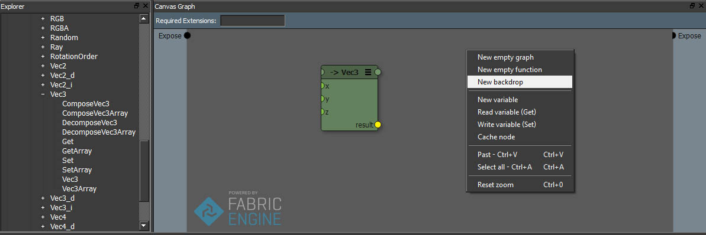
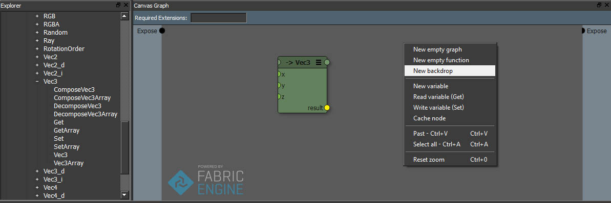
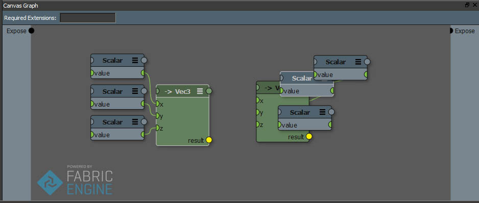
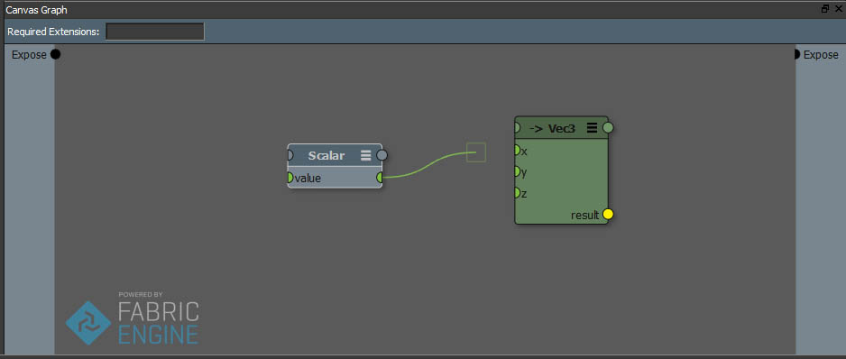
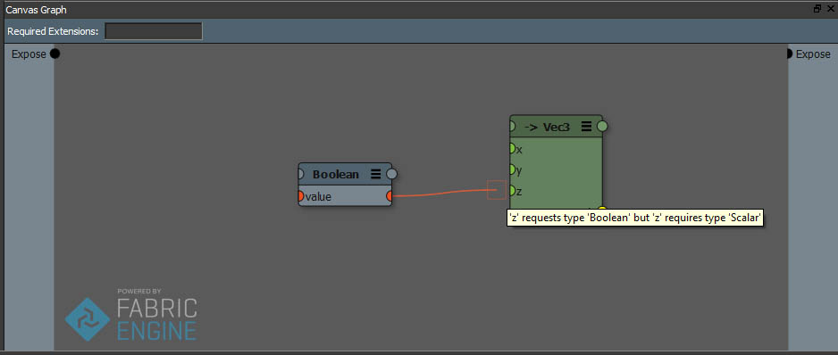
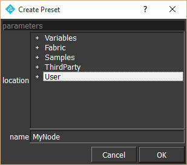
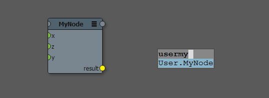
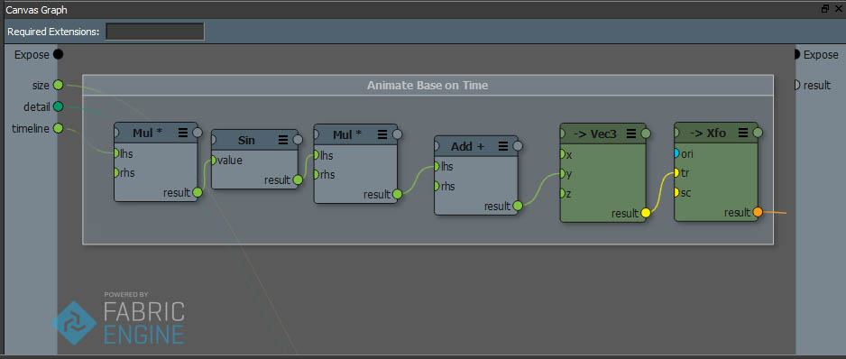
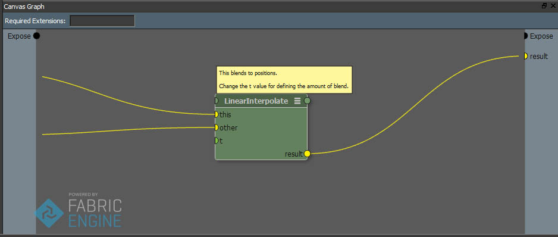

Canvas Graph View¶
Fabric Canvas Graph View インターフェースは Fabric のノードベースエディタです。そこではノードの追加/削除、ノード間の接続を定義、あるいはサブグラフを含むようなカスタムノードや、KLコードを含むようなノードを新規作成しつつ、グラフを作成できます。
Canvasは全ての Fabricの統合版、もちろんスタンドアロン版(canvas.py)から利用できます。使用するホストアプリケーションによらず同じ操作で利用できます。
ノードの作成¶
Canvasではノードの作成手段が多数あります。
Preset Tree: プリセットツリーから作成したいノードを見つけます。Fabricのファクトリプリセット、ユーザホームディレクトリ下の”Fabric/Presets/User”フォルダ、それにくわえ環境変数
FABRIC_DFG_PATHディレクトリ以下、に存在する全てのプリセットへのアクセスを提供します。ノードとしてインスタンス作成をおこないたいプリセットをドラッグし、グラフビューへドロップしノードを作成します。Tab Search: グラフビューにフォーカスがある際、 TAB キーを押すとスマートサーチを開始します。検索ボックスにインスタンスを作成したいプリセットの名前の一部を入力します。例： Math.Vec3.ComposeVec3 や MaVComp など。
コンテキストメニュー: 特殊なノード、例えば backdrops、empty graph ノード、functionノード、blocks を作成できます。Canvas上で右クリックし、それぞれ適切なコンテキストメニューを選びます。
 

注釈
特定のノードは、型名やメソッド名では見つかりません。該当プリセットのポリモーフィック、複数の型のサポートのためです。 ―例えば Vec3.unit は見つかりませんが Math.unit で望みのノードが見つかります― ポリモーフィックについては polymorphic を参照してください。
Node UI 解説¶

Canvas UI のノードで可能な一連の操作：
折りたたみボタン
どのノードもヘッダの右端の小さいアイコンをクリックし表示を折りたたむことができます。折りたたみ状態はサイクルします。
全てのポートを表示
接続のあるポートのみ表示
全てのポートを非表示
選択ノード全て一括で折りたたみできます。それぞれキーボードショートカットで １，２，３キーを押します。
ヘッダーポート
ノードのすべてのポートへは、ノードラベルすぐ横のヘッダをクリックすることでアクセスできます。ノードを折りたたんでいる場合に便利です。非プリセットノードではこのメニューから、新規のポートを外部公開することもできます。
整列
Ctrl+R キーショートカットにより、選択ノードとその子供を、自動再配置します。
ズーム
A ショートカットキーを押すと、グラフ中のノード全てをうつすようにフレーム移動します。F ショートカットキーを押すと、選択ノードにフォーカスします。
編集
ノードをシフトキーを押しながらダブルクリックすると、ノード内部へ突入します。ノードのタイプによって以下のどちらか、突入したノード（サブグラフあるいはKL関数）の定義を示すか、突入したノードにあるブロックインスタンス（複数可）どれか一つの定義をしめします。サブグラフや、カスタムKLノードについてのより詳しい情報は、このページ後段のセクションにあります。
（ノードの出力として表示されていない）入力ポートをデイジーチェーン（数珠つなぎ）することもできます。ノードの入力ポートの右側（高さを合わせましょう）をマウスでホバーさせると出力ポートが表示されます。
ノードの接続¶
ノードをクリックしポートをドラッグしノードを接続します。シフトキーを押しながらポートを選択すると、接続を複数のポートに対して連続で行えます。さらにヘッダポートを使用するとそのノードが折りたたみされていても全てのノードにアクセス可能です。
互換性のあるポート間のみ接続を作成できます。非互換である場合、接続に失敗した原因がツールチップに表示されます。
ノードのヘッダポートをクリックすると、ポートリストが表示されます。’=’ は inポート (ポートの値はパススルーされることを意味)、 ‘>’ は out, ioポートであることを示します。

ポートの外部公開（Expose）¶
ホストアプリケーションから、あるいはサブグラフの上位ノードから利用可能なようにするには、ポートを外部公開（Expose）します。ポートを外部公開するには複数の手段があります
サイドパネルを右クリックし、 Create port を選びます。ダイアログに従いそれぞれ名前と ―トップレベルのグラフであればそのポートのデータ型を― 指定し作成します。指定したデータ型が、特定の拡張に含まれるものであれば、さらに advanced -> extension 欄に拡張の名前を指定します。
両サイドパネルにある黒い Expose ポートとノードのポートを接続します。これにより正しく設定せれた外部公開ポートが作成され接続されます。
ノードヘッダのポートボタンをクリックし、”Expose Port”を選びます。既存のポートをドラッグし、ノードヘッダのポートボタンへドロップし、”Expose Port”を選択しても新規ポートの作成がおこなえ、さらに同時に接続を張ることもできます。どちらの操作でも、新規ポートの詳細についてダイアログが登場します。
ポートのオプション¶
Create port もしくは Edit port する際、metadata セクションよりポートの追加設定が行えます。
visibility コンボボックスではポートがホストアプリケーション ―例えばMaya― に対しどのように外部公開されるかを指定できます。
normal: ポートの値はホストアプリケーションの型（アトリビュート）に合わせ、可能な場合マップされ変換されます。
opaque: ポートの値は、ホストアプリケーションからは、不明なデータ型として扱われます。異なるホストアプリケーション間でグラフを共有する際、ホストの処理系には関与されたくないような不安定な ―volatile― KLオブジェクトをやりとりできます。
hidden: このポートは、ホストアプリケーションからは不明となります。
persist value チェックボックスはトップレベルのグラフでのみ現れます。チェックを入れるとポートの値がグラフと共にpersist ―永続化、保存― されることを示します。 チェックが入らない場合、再度グラフを読み込むとポートの値はディフォルトへとリセットされます。値の永続化についての技術的詳細は ポートの値の永続化（Port value persistance） を参照してください。
注釈
Maya や Softimage では、このオプションは変更した値や単純な型に応じ自動で設定されます。
use range チェックボックスは値編集 UI の幅を編集目的に合わせ指定できます。（実行時に値の切り上げ落としは行われません）
use combo チェックボックスでは、リスト表示のコンボボックスUI です。0..N-1 としてマップされます。
注釈
トップレベルグラフのポートダイアログは、特定のホストアプリケーション ―例えばMaya― 上で特別な機能を提供しています。
ポートの再配置¶
グラフ中のポートは、望みの場所へドラッグすることで再配置できます。また、inputあるいはoutput全てのポートは、右クリックのコンテキストメニューから一番下に移動させることができます。
Execute ポート¶
いくつかのノードでは Execute とよばれる特別なノードを提供しています。このノードはデータをやりとりすためではなく、特定のノード間を単にデイジーチェーンするためだけに存在し、実行フローの制御に使用します。プログラマガイド内の Execute Ports に詳細な情報があります。
サブグラフ¶
グラフ中何もない場所を右クリックし New empty graph を選びとサブグラフを内包する新規ノードを作成できます。サブグラフを編集するには、該当ノードをシフトキーを押しながらダブルクリックするか、もしくは右クリックしコンテキストメニューから Edit を選びます。サブグラフの編集から抜けるにはグラフ右上部の Back ボタンを押します。

サブグラフの作成と展開（Imploding / Exploding）¶
複数のノードを一つのサブグラフとしてに纏めることができます。複数のノードを選択し右クリックし Implode を選びます。選択したノードを含むサブグラフノードが一つ作成されます。全ての接続は保ったまま、サブグラフに向かう入力は自動的に外部公開されます。
当然逆の操作も可能です。サブグラフを選択し展開します。サブグラフは削除され、そこに含まれていたノードは全ての接続を保ったまま現在のグラフへ展開されます。
コピー・アンド・ペースト¶
システム特有のキーボードショートカットを使い Canvas のノードはコピー・アンド・ペーストを行えます。Canvas では選択中のノードもしくはグラフをテキスト形式でクリップボードに保存します。JSON 形式でエンコードされているので、他のアプリケーション ―例えばテキストエディタや、ほかのCanvas アプリケーション― 上へペースト出来ます。つまり異種間DCCで直接コピー・アンド・ペーストが可能です。
必要エクステンションの定義¶
グラフはディスクに存在するKLエクステンションに依存させることができます。ユーザ独自の KLのデータ構造を記述、あるいは用例としてサードパーティ製のKLエクステンションをダウンロードするなどした場合、それらを使用するには一番上にある Required Extensions フィールドに依存関係を指定する必要があります。KLエクステンション由来のデータ型を使用するポートを定義する場合に有用です。このフィールドには、複数のエクステンションをカンマ区切りで指定可能です。必要なエクステンション名とバージョンを記入します。米印アスタリスク（*)を使用するとどのバージョンにも適します。グラフビューでも、KL関数エディタでもどちらでもこの機能は有効です。例を示します：
Math:*,Utils:1.1
プリセットの保存と書き出し¶
プリセットに関連付けられていない Canvas ノードは inlined と呼びます。これらのノードはグラフ保存時、グラフ中に保存されます。 inline なノードかそうではないかはノードタイトルがイタリック体か通常書体か、もしくはタイトル頭に * がつているかどうかで見分けられます。

Canvas のノードは以下２通りのディスクへの保存方法があります。第１の方法は、ノードを選択し右クリックから Export graph を選び、ノードを外部ファイルに保存します。これは複数人でプリセットを共有する場合、例えばサーバにアップロードする場合に使えます。ただし、吐き出し時のセッション中に、そのプリセットを使用できるわけではありません。グラフをエクスポートすると、現時点の入力の型と値を保持したままとなります。
第２の方法は、任意のノードをプリセットにします。環境変数 FABRIC_DFG_PATH 内ディレクトリに作成できます。このディレクトリはディフォルトでは Fabric Engineのインストールフォルダ（ただしここにはプリセットを作成できません）と、システムのユーザーホームフォルダ以下にあります。
ノードのプリセットを作成するには、ノードを右クリックし Create preset を選びます。
プリセットを作成、保存する場所を選びます。既存フォルダではなく書き込み可能な場所に新規でフォルダを作成することもできます。（Fabric Engine インストールフォルダ以下は除く）新規フォルダ作成には親フォルダを右クリックしましょう。保存フォルダを選び、名前をつけ Ok を押します。プリセット化によりノードのタイトル書体は通常になり、* 表記も消えます。
以後、そのノードをスマートサーチにその名前を与え作成することができるようになります。
カスタム KL ノード¶
Canvas ノードでは KL関数をノードに含むこともできます。KL関数ノードの作成には、グラフ中何もない場所を右クリックし New empty function を選びます。KL関数を編集するには、そのノードをシフトキーを押しながらダブルクリックするか、ノードのコンテキストメニューから Edit を選びます。カスタムKL関数についてのより詳しい情報はプログラマガイド内 KL Function エディタ を参照してください。
Backdrops¶
Backdrops（背景）ノードは、グラフ中のワークスペースを整理するための特別なノードです。Backdropsノードの作成は、何もない場所を右クリックし New backdrop を選びます。Backdropsの、大きさの変更はノード四隅をドラッグ、色の変更は右クリックし Properties から行えます。Backdropsは他のノードを内包できます。Backdropsの中にドラッグ・アンド・ドロップで他のノードを入れます。
コメント¶
全てのノードにはコメントをつけることができます。他人のグラフに馴染みがない場合、特に有用でしょう。ノードを右クリックし、 Set comment を選びます。コメントを消すには Remove comment です。コメントの編集はコメントをダブルクリックします。コメントは右クリックにより折りたためます。黄色くスティッカー状に折りたたまれたコメントをダブルクリックで元に戻します。
注釈
Backdropsにもコメントをつけることができます。ノードセクション全体に記述を行う場合に使用しましょう。